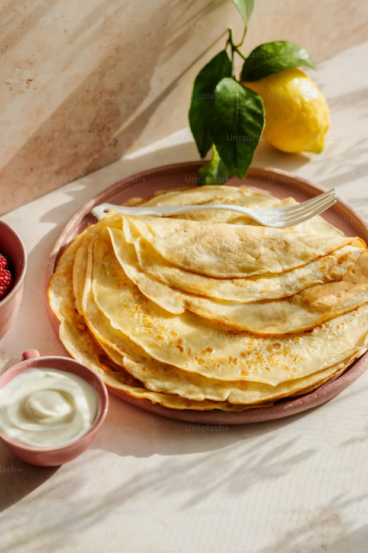

Enkelt recept på pannkakor
Gör traditionella tunna pannkakor med detta enkla och goda pannkaksrecept.
- Portioner:
- 4
- Tillagningstid:
- 30 min
- Svårighetsgrad:
- Lätt
Ingredienser
Så här gör du
Serveringsförslag


Gör traditionella tunna pannkakor med detta enkla och goda pannkaksrecept.
